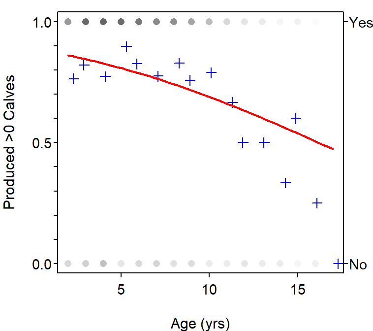

Moose Calf Production
- The logistic regression model does not seem to fit the proportions of moose that had at least one calf very well, as it overestimates at the first few and last several ages and underestimates in the middle ages (i.e., blue pluses; Figure 1).
- The estimated slope indicates that the log odds that a moose had at least one calf decrease between 0.0611 and 0.1976, on average, for every increase in age by one year.
- The back-transformed estimated slopes indicates that the odds that a moose had at least one calf are between 0.8207 and 0.9407 as much after an increase of one year.
- The log odds of a 10-year-old moose having at least one calf is 2.0871+-0.1290*10 = 0.7975.
- The log odds of a 10-year-old moose having at least one calf as computed in R is also 0.7975 (see code in appendix).
- The odds of a 10-year-old moose having at least one calf is \(e^{0.7975}\)=2.2200.
- The probability of a 10-year-old moose having at least one calf is \(\frac{2.2200}{1+2.2200}\)=0.6894.
- The probability of a 10-year-old moose having at least one calf as computed in R is also 0.6894 (see code in appendix).
- The probability of an 11-year-old moose having at least one calf is 0.6612. Thus, the odds of an 11-year-old moose having at least one calf is \(\frac{0.6612}{1-0.6612}\)=1.9514.
- The ratio of the odds for the 11-year-old to the odds of the 10-year-old is \(\frac{1.9514}{2.2200}\) = 0.8790, which is the same as the back-transformed slope (i.e., \(e^{-0.1290}\)).

Figure 1: Fitted plot for the logistic regression of whether or not the moose produced at least one calf and the moose’s age.
R Appendix.
d <- readxl::read_excel("MooseCalves.xls")
d$Calf.production.status <- factor(d$`Calf production status`)
glm1 <- glm(Calf.production.status~Age,data=d,family="binomial")
fitPlot(glm1,xlab="Age (yrs)",ylab="Produced >0 Calves")
cf1 <- coef(glm1)
ci1 <- confint(glm1)
log10 <- predict(glm1,data.frame(Age=10)) # log odds
p10 <- predict(glm1,data.frame(Age=10),type="response") # probability
p11 <- predict(glm1,data.frame(Age=31),type="response")